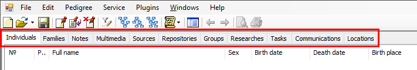

button on the
toolbar, or the "Edit\Filter" menu item, or press the [Ctrl + F]
hotkey. In addition, the "Persons" tab has a quick search feature from the
"Edit\Search" menu item.
button on the
toolbar, or the "Edit\Filter" menu item, or press the [Ctrl + F]
hotkey. In addition, the "Persons" tab has a quick search feature from the
"Edit\Search" menu item.
GEDKeeper stores records in the database of the following types:
The main working window has a dedicated tab for each record type:

The following operations are available for all record types: add, modify, remove, and filter.
Each tab has two visual parts: a table with a record list on the left and a summary window that displays detailed information about the selected entry in the table.
You can order entries in the table by clicking a column header which is a property of the record. To avoid accidental changes, you cannot change data directly in the table (in-place editing is disabled). To open the editor window for a record you can double-click the row or select a row and press the [Ctrl + Enter] hotkey.
All record types have two common attributes: record identifier and last modification time ("#" and "Changed" columns respectively). All other attributes in a record type are record specific.
You can activate a filter on the
table using the button on the
toolbar, or the "Edit\Filter" menu item, or press the [Ctrl + F]
hotkey. In addition, the "Persons" tab has a quick search feature from the
"Edit\Search" menu item.
See also: Record selection dialog.